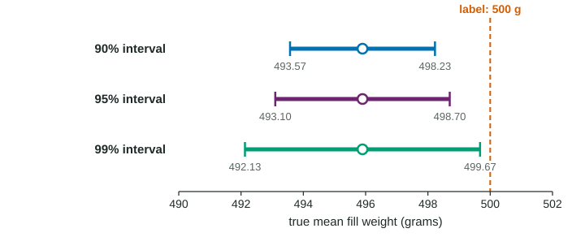

Justifying a Claim Based on a Confidence Interval for a Population Mean or Population Mean Difference
Use a t interval to judge a claim about a mean: a claimed value outside the interval is not plausible, so the interval gives convincing evidence against it; a value inside is plausible, and nothing is proven.
Part 1 · Hook
Why this matters
Part 2 · Before you start
What this builds on
Part 3 · Prerequisite check
Quick check before you start
1. A 95% t interval for a mean is from 5.60 to 8.00. What is its margin of error?
- 1.20
- 2.40
- 6.80
- 0.60
Show the answer
The margin of error is half the width: .
- Correct: 1.20:
- 2.40:
- 6.80:
- 0.60:
2. A value inside a confidence interval is
- a plausible value for the parameter
- the true value of the parameter
- the sample statistic
- an impossible value for the parameter
Show the answer
The interval gives a range of plausible values; none is shown to be the true one.
- Correct: a plausible value for the parameter:
- the true value of the parameter:
- the sample statistic:
- an impossible value for the parameter:
Part 4 · See it
See it first

Part 5 · Step by step
How it works, step by step
- An interval lists the plausible values of the true meana claimed value outside it is not plausible, and one inside it is
- If every value in the interval is on one side of the claimed valuethe interval gives convincing evidence that the true mean is on that side
- If the claimed value is inside the intervalthe interval does not give convincing evidence against it, and does not prove it either
- The width is higher confidence (larger ) widens it; a larger sample narrows it, by about half for four times the data
Part 6 · Key ideas
Key ideas
- Claim from an interval: "Because every value in the interval is less than 500 (or: 500 is in the interval), the interval gives (does not give) convincing evidence that the true mean ..."
- A plausible value is not a proven value: many values inside the interval are equally plausible.
- Interval width : more confidence, wider; more data, narrower; more variable data, wider.
- A % interval matches a two-sided test at : it excludes exactly the values that test would reject.
Part 7 · Misconception
A common mistake
The wrong idea: The claimed value is inside the interval, so the interval proves the claim is true.
What actually happens: Inside the interval means plausible, nothing more. Other values in the interval are just as plausible, so the claim is neither rejected nor proven.
Part 8 · Check yourself
Check yourself
Exam-style questions. Anything you miss goes into your review queue.
Table
Cereal box fill weights
A cereal maker labels its boxes "500 grams". An inspector takes a random sample of 30 boxes from the thousands filled on one day and weighs the contents (invented data). A dotplot of the 30 weights shows no strong skew and no outliers.
| Sample size | Mean | Standard deviation | 95% confidence interval for the mean |
|---|---|---|---|
| 30 | 495.9 g | 7.5 g | from 493.10 to 498.70 g |
1. What are the point estimate and the margin of error of the 95% interval?
- 495.9 g and 5.60 g
- 500 g and 4.10 g
- 495.9 g and 7.5 g
- 495.9 g and 2.80 g
Show the answer
Interval = point estimate margin of error, so the center is 495.9 g and the margin is 2.80 g.
- 495.9 g and 5.60 g: 5.60 g is the full width of the interval. The margin of error is half of it.
- 500 g and 4.10 g: 500 g is the label, not an estimate from the data. The center of the interval is the sample mean, 495.9 g.
- 495.9 g and 7.5 g: 7.5 g is the sample standard deviation of single boxes. The margin of error is
g. - Correct: 495.9 g and 2.80 g: The point estimate is the center, ; the margin of error is half the width,
g.
2. Does the 95% interval give convincing evidence that the true mean fill weight that day is different from the 500 grams on the label? Build the justification.
Write the conclusion in context.
Show the answer
Every plausible value in the interval is below 500, so 500 is not a plausible value for the true mean, and the evidence points to underfilling.
- A full-credit answer: Because every value in the interval from 493.10 to 498.70 g is less than 500, the interval gives convincing evidence that the true mean fill weight of all boxes filled that day is less than 500 grams.
3. A manager says, "The true mean fill weight that day was 497 grams." What does the 95% interval say about this claim?
- 497 g is plausible, but the interval does not show it is the true mean
- The interval confirms that the true mean is 497 g
- 497 g is not plausible because it differs from 495.9 g
- The claim is rejected, because 497 g is less than the 500 g on the label
Show the answer
A value inside the interval is plausible; that is weaker than being shown true.
- Correct: 497 g is plausible, but the interval does not show it is the true mean: 497 lies inside the interval, so it is a plausible value. So are many others, such as 494 and 498.5, so the data cannot single out 497.
- The interval confirms that the true mean is 497 g: An interval gives a range of plausible values. It cannot confirm one value.
- 497 g is not plausible because it differs from 495.9 g: Values near the sample mean are the most plausible ones; 497 is well inside the interval.
- The claim is rejected, because 497 g is less than the 500 g on the label: The interval is the guide here, and 497 is inside it.
4. From the same data, a 90% interval for a mean is narrower than a 95% interval. What is the trade-off?
- The 90% interval is narrower and captures the mean more often
- There is no trade-off, so 90% is better
- The 90% interval uses a smaller sample
- The 90% interval is more precise but captures the mean less often
Show the answer
Confidence and precision pull against each other for a fixed sample: lower confidence, smaller , narrower interval.
- The 90% interval is narrower and captures the mean more often: Narrower intervals from the same data miss more often.
- There is no trade-off, so 90% is better: Precision is gained by giving up some confidence.
- The 90% interval uses a smaller sample: Both intervals use the same sample; only the critical value changes.
- Correct: The 90% interval is more precise but captures the mean less often: A smaller gives a narrower interval, but the method captures the true mean in about 90% of samples instead of 95%.
5. Which changes make a t interval for a mean narrower? Select all that apply.
- A larger sample size
- A lower confidence level
- A population with more variability
- A higher confidence level
- Replacing with
Show the answer
Width : shrink it with a larger or a smaller (lower confidence). A smaller would help too, but that is the population's, not the researcher's, choice.
- Correct: A larger sample size: Right: the standard error shrinks.
- Correct: A lower confidence level: Right: gets smaller.
- A population with more variability: More variability means a larger , which widens the interval.
- A higher confidence level: Higher confidence needs a larger , a wider interval.
- Replacing with : That makes the arithmetic narrower but the method wrong: with in the formula the capture rate would fall below the stated level.
6. A coffee shop says its large drinks hold at least 16 ounces on average. A 95% interval for the true mean, from a random sample of drinks, is from 15.8 to 16.4 ounces. Which conclusion is justified?
- The interval proves the mean is at least 16 ounces
- The interval does not give convincing evidence against the shop's claim
- The interval gives convincing evidence that the mean is below 16
- The interval shows the mean is exactly 16.1 ounces
Show the answer
To give convincing evidence against "at least 16", every plausible value would have to be below 16. Here part of the interval is at or above 16.
- The interval proves the mean is at least 16 ounces: An interval never proves a claim, and values below 16 are plausible.
- Correct: The interval does not give convincing evidence against the shop's claim: Values of 16 or more are inside the interval, so the claim is plausible. Values below 16 are plausible too, so the claim is not shown true either.
- The interval gives convincing evidence that the mean is below 16: 16 and values above it are inside the interval, so they remain plausible.
- The interval shows the mean is exactly 16.1 ounces: 16.1 is the center, the point estimate; the interval allows a range of values.
Part 9 · Summary
Summary
Part 10 · Up next
What comes next
Part 11 · Connections